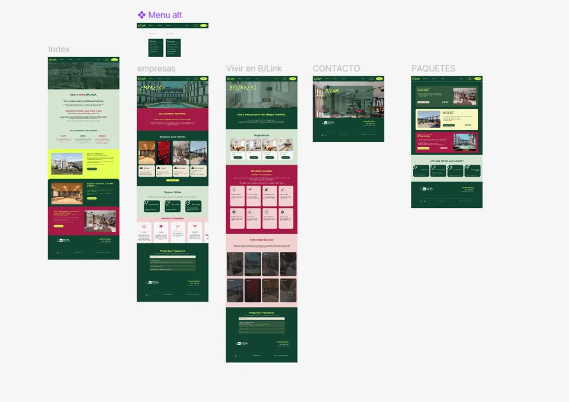
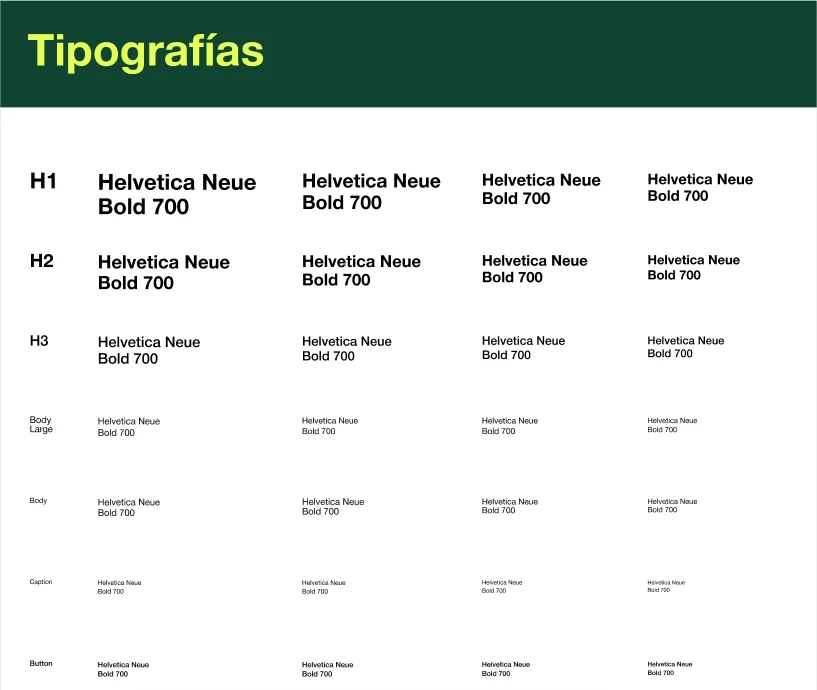
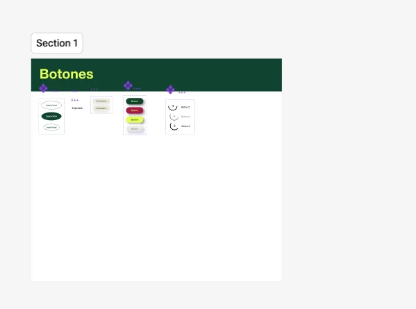
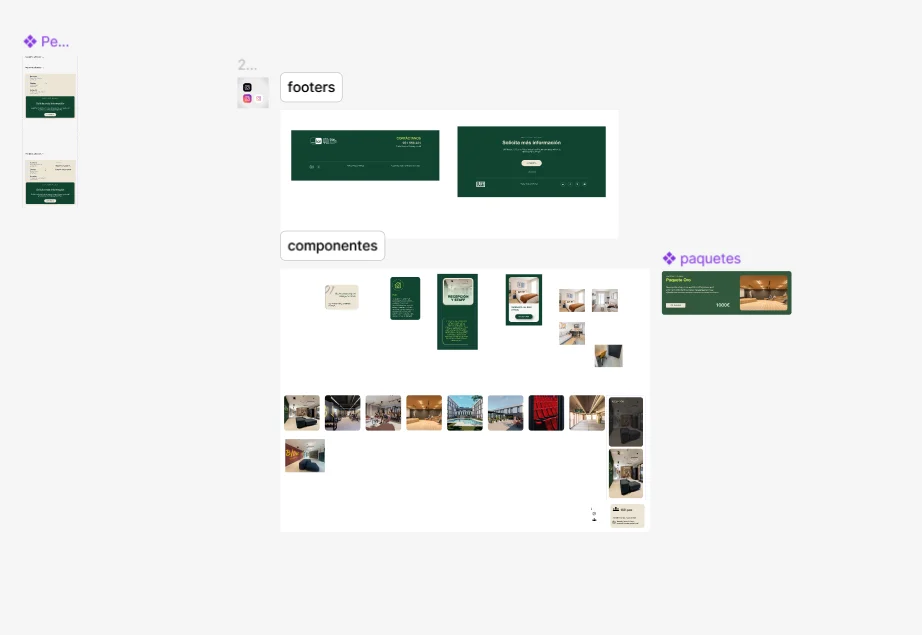

Blink Málaga · web
Diseño completo de blinkmalaga.com en Figma, del design system a las pantallas, y desarrollo en WordPress.
Full design of blinkmalaga.com in Figma, from the design system to the screens, built in WordPress.

- Sector
- Flex living · alojamiento por días, semanas o mesesFlex living · stays by the day, week or month
- AñoYear
- 2025
- Mi rolMy role
- Diseño UX/UI en Figma y desarrollo en WordPress.UX/UI design in Figma and build in WordPress.
- EntregablesDeliverables
- Design system; Inicio, Empresas, Vivir en B/Link, Paquetes y Contacto; menú, botones, footers y componentesDesign system; Home, Business, Living at B/Link, Packages and Contact; menu, buttons, footers and components
- HerramientasTools
- Figma · WordPress
01El retoThe challenge
Blink ofrece alojamiento por días, semanas o meses en el Málaga TechPark, para residentes y para empresas. La web tenía que contar las dos ofertas por separado y llevar a pedir información.Blink offers stays by the day, week or month at Málaga TechPark, for residents and for companies. The website had to present both offers separately and lead to an enquiry.
02ProcesoProcess
- Una página por públicoOne page per audience
Empresas y Vivir en B/Link separan la oferta para equipos y para residentes; Paquetes reúne las opciones con precio.Business and Living at B/Link split the offer for teams and for residents; Packages gathers the priced options.
- Componentes antes que pantallasComponents before screens
Botones, tarjetas, paquetes y footers se diseñaron como componentes en Figma y se reutilizan en todas las pantallas.Buttons, cards, packages and footers were built as Figma components and reused across every screen.
- El color ordena las seccionesColour organises the sections
El verde, el granate, el lima y el crema de Blink se alternan por bloques, para que cada sección se distinga al hacer scroll.Blink’s green, crimson, lime and cream alternate by block, so each section stands out while scrolling.

03Design system
Un archivo de Figma propio con colores, tipografías, retícula, iconos y componentes. Todas las pantallas salen de él.A dedicated Figma file with colours, typography, grid, icons and components. Every screen is built from it.
ColorColour
#104430#E4FF54#A41848#D4E4D0#F4D0D0#ECE8E4#F8F8C0TipografíaTypography



04SoluciónSolution
Cinco pantallas y un menú alternativo construidos con los mismos componentes: botones, tarjetas de espacio y de paquete, y dos footers, uno con el contacto y otro para solicitar información.Five screens and an alternative menu built from the same components: buttons, space and package cards, and two footers, one with contact details and one to request information.